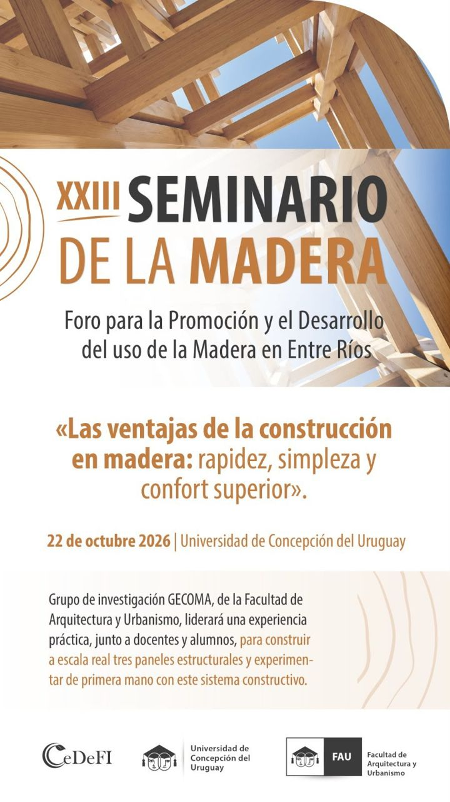

Una instalación en madera y una charla sobre rotulado
Sede central de la UCU, Concepción del Uruguay · Jueves 22 de octubre de 2026
El Foro para la Promoción y el Desarrollo del Uso de la Madera en Entre Ríos hace su seminario anual en la Universidad de Concepción del Uruguay. Esta es la edición XXIII, con el lema «Las ventajas de la construcción en madera: rapidez, simpleza y confort superior», y la jornada tiene dos actividades, las dos abiertas y gratuitas.
Qué va a haber
Una instalación en madera
Actualizado el 13 de octubre · Horario a confirmar
El flyer oficial anunciaba que GECOMA, el grupo de investigación de la Facultad de Arquitectura y Urbanismo, iba a construir con docentes y alumnos tres paneles estructurales a escala real. La organización informó después que, por el costo, los paneles no se van a hacer: en su lugar habrá una instalación. Cuando se conozcan los detalles, los sumo acá.
Conferencia sobre rotulado de la madera
18 a 19 h · Sede central de la UCU
Está pensada sobre todo para aserraderos y para quienes producen y venden madera. El rotulado es un sistema de identificación para que cada pieza llegue al comprador con datos certificados, como el contenido de humedad y la aptitud para construir.
Para quien trabaja la madera en el taller, ese tema importa más de lo que parece: saber con qué humedad sale una tabla del aserradero es saber cuánto se va a mover después.
De dónde viene el Foro
El Foro se creó entre 2002 y 2003 en la Facultad de Arquitectura y Urbanismo de la UCU, y su primer seminario fue en 2004. Desde entonces convoca cada año a productores forestales, fabricantes, profesionales, artesanos, docentes y estudiantes alrededor de una pregunta: cómo usar más y mejor la madera que se produce en Entre Ríos, que es en su mayoría eucalipto de bosques cultivados.
La edición de 2025 reunió a más de 300 inscriptos, entre presenciales y a distancia, y ya había tenido al rotulado entre sus temas, con una disertación del INTA Concordia.
Lo que todavía no se anunció
Al cierre de esta nota no estaban publicados los expositores, la forma de inscripción ni si habrá transmisión en línea; el flyer oficial tampoco los menciona. Cuando la organización lo confirme, lo sumo acá.
Dónde y cuándo
Jueves 22 de octubre de 2026. Conferencia de 18 a 19 h; el horario de la instalación está a confirmar.
Sede central de la Universidad de Concepción del Uruguay, 8 de Junio 522, Concepción del Uruguay, Entre Ríos.
Entrada libre y gratuita.
Organizan: Facultad de Arquitectura y Urbanismo de la UCU, con CeDeFI.

Flyer oficial del seminario. Los paneles que anuncia no se van a construir: en su lugar habrá una instalación.Anuncio de la UCU ↗